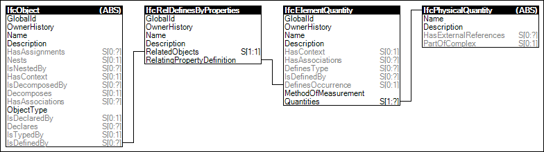

Link to this page
Link to this pageAny specialization of object can be related to multiple quantity set occurrences. A quantity set contains multiple quantity occurrences. The data type of quantity occurrence values are count, length, area, volume, weight, time, or a combination of quantities. Each quantity is defined by its name, value, and optionally a description and a formula.
The quantity set is expressed by instances of IfcElementQuantity, where the Name attribute determines the common designator of the quantity set. This specification contains a number of predefined quantity sets, a template definition is provided for each of them. The name of the template has to be used as the value of the Name attribute. The MethodOfMeasurement attribute specifies the method, by which the values of the individual quantities are calculated. For the quantity set templates included in this specification, the value of MethodOfMeasurement shall be "BaseQuantities".
Figure 13 illustrates an instance diagram.
 |
Figure 13 — Quantity Sets |